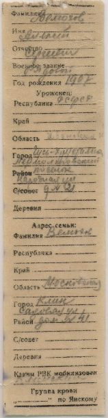
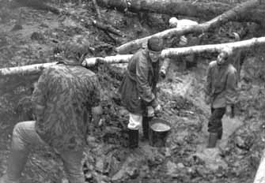

| Поисковики узнают о войне не из книг и журналов, а из своей собственной
жизни. Поисковый раскоп порой рассказывает больше, чем самая лучшая книга
о войне. Мы переживаем войну еще раз. Пусть не с такой остротой, но все
же по-настоящему начинает щемить сердце, когда встречаешь в кармане гимнастерки
истлевшее письмо, которое так и не попало домой. Или очки, через которые
смотрел человек, который сейчас вполне мог бы жить, но погиб за тебя...
Возможно, он очень плохо видел и погиб из-за своей близорукости в первом
же бою. |
 |
|
 |
|
| Смертные медальоны являются настоящей удачей для поисковиков. Но не во всяком смертном медальоне есть заветная информация. Очень часто мы находим пустые медальоны. Среди солдат бытовало поверье, что, если заполнишь бланк смертного медальона, убьют... |
На этой страничке мы планируем рассказать о многом: о технике поисковой работы, в том числе об обращении со взрывоопасными предметами. О том, что нам удается узнать о войне от местных жителей, из архивов, из книг...
Пока же посетите поисковый раздел нашей электронной библиотеки